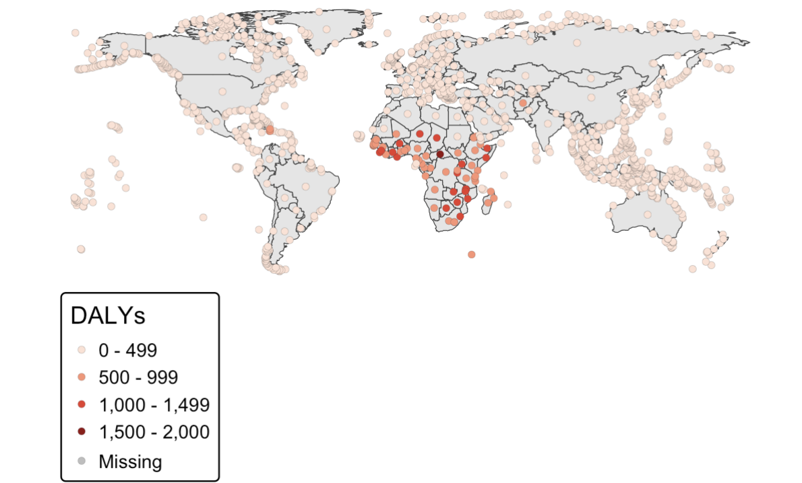

usethis::create_project("hmsid-book")Writing a book in R
book
Overview
In this post, I share my experience of writing a book entirely in R, and the challenges I faced along the way. I walk through the tools I used, the workflow I followed, and the lessons I learned while preparing a full-length technical book supported by datasets, code, and reproducible examples.
It has been an incredible journey. Now that the book is fully published, I feel both the excitement of sharing it with readers and a sense that a long creative process has reached its conclusion.
Below, I explain how I structured the book, organised the code, automated the rendering, and ensured the material remained reproducible from the first draft to the final version.

Setting Up the Project
I started by creating a dedicated RStudio project. Keeping the book isolated in its own project was essential for reproducibility, file organisation, and version control.
Create a new book project structure
Set up a Git repository to track changes:
# Initialise git
`usethis::use_git()`Then I added a basic Quarto/bookdown structure:
quarto::quarto_create("hmsidwR", template = "book")This generated the _quarto.yml file, a structure for chapters, and a place for images and data.
A minimal _quarto.yml looked like this:
project:
type: book
book:
title: "Health Metrics and the Spread of Infectious Diseases"
author: "Federica Gazzelloni"
chapters:
- index.qmd
- 01_introduction.qmd
- 02_data.qmd
- 03_methods.qmd
- 04_modeling.qmd
- 05_spatial_analysis.qmd
- 06_results.qmd
- 07_conclusions.qmd
format:
html:
theme: cosmo
pdf:
documentclass: scrreprtManaging Data Inside an R Package
To keep the workflow clean and reproducible, I organised all datasets into a companion R package (hmsidwR). This meant readers could reproduce every example with:
install.packages("hmsidwR")
library(hmsidwR)Loading a dataset was as simple as:
Packaging the data required a few lines in the development workflow:
usethis::use_data(tb_data, overwrite = TRUE)This approach saved hours of manual file handling in later stages of writing.
Writing Chapters with Embedded Code
Most chapters combined narrative text with code chunks. A typical section looked like this:
Life Expectancy Trends
We begin by exploring changes in life expectancy across countries.
library(tidyverse)
library(hmsidwR)
set.seed=04122025
hmsidwR::gho_le_hale %>%
filter(indicator=="Life expectancy at birth (years)",
sex=="both sexes") %>%
group_by(region, year) %>%
reframe(le=mean(value, na.rm=TRUE)) %>%
ggplot(aes(year, le,
colour = region)) +
geomtextpath::geom_textline(aes(label = region),
position = "jitter",
orientation = "x",
hjust=0,size=3,
show.legend = F) +
ggthemes::scale_color_economist()+
labs(title = "Life Expectancy Over Time",
x="Time(year)",
y="Life expectancy at birth (years)")+
theme_minimal(base_size = 14,
base_rect_size = 0.2,
base_line_size = 1,
accent = "red",ink = "grey25") +
theme(text=element_text(face="bold"),
axis.title = element_text(size=9))
Keeping all figures generated directly from the code ensured:
- No manual image editing
- Fully up-to-date plots on each render
- Transparent modelling steps
Automating Rendering
With dozens of chapters and hundreds of figures, manual rendering was not feasible. I automated it using one command:
quarto::quarto_render()For more granular control (helpful when writing new sections):
quarto::quarto_render("03_methods.qmd") # render a single chapterBefore shipping the final manuscript, I used a clean render:
quarto::quarto_clean()
quarto::quarto_render()This guaranteed that everything knitted from scratch.
Version Control and Collaboration
Git and GitHub supported the entire project:
usethis::use_github()Each chapter was committed incrementally:
git add 03_methods.qmd
git commit -m "Expand description of spatial interpolation"
git pushVersion control helped keep track of: - structure revisions - code changes - feedback from early readers - chapter reorganisations
Designing Figures and Reproducible Maps
Spatial chapters required more complex workflows. For example:
library(sf)
library(terra)
library(tmap)
world <- vect(hmsidwR::idDALY_map_data)
tb <- hmsidwR::idDALY_map_data
tm_shape(world) +
tm_borders(fill="grey90",lwd=0.5) +
tm_shape(tb) +
tm_dots(col = "DALYs",
shape=21,lwd = 0.1,
palette = "matplotlib.reds") +
tm_layout(frame = FALSE)
Every map in the book was generated this way, ensuring readers could run the exact same code.
Lessons Learned
Writing a technical book is both exciting and demanding. I dedicated countless hours to selecting the right material and presenting it in a way that early-career researchers could follow. One of the most difficult decisions was choosing what to include and what to leave out, always aiming for clarity over completeness.
Even now that the book is published, ideas continue to appear. There is always the thought of adding more material, improving explanations, or strengthening examples. At some point, you must trust the work and release it.
I am grateful for all the support I received throughout this process. The conversations, reviews, and early feedback played a key role in shaping the final version.
What’s Next?
Although this project is complete, my writing plans certainly are not. I will continue developing extensions, datasets, and methodological notes. New projects are already emerging, and this experience has strengthened my commitment to open, reproducible, and accessible research.
For now, I invite you to explore the book, use the examples, and share your thoughts. Your insights will help me shape future work and teaching material.
“Thank you for following this journey.”